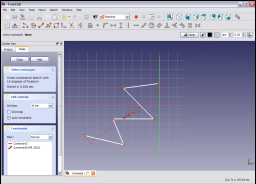

|
| Menüeintrag |
|---|
| Sketch → Sketcher constraints → Constrain distance |
| Arbeitsbereich |
| Sketcher, PartDesign |
| Standardtastenkürzel |
| None |
| Siehe auch |
| Constraint HorizontalDistance, Constraint VerticalDistance |
Beschreibung
Die Einschränkung : Länge beschränkt die Länge einer Linie, den senkrechten Abstand zwischen einem Punkt und einer Linie oder den Abstand zwischen zwei Punkten auf einen bestimmten Wert.
Hinweis
Wenn möglich sollten Sie stattdessen die Einschränkungen Horizontal Distance oder Vertical Distance verwenden. Diese Einschränkungen sind robuster und schneller zu berechnen als die hier dokumentierte Längenbeschränkung.
Anwendung
Wähle eine Linie in der Skizze,

durch anklicken der Linie (Diese wird hervorgehoben).

Aktiviere die Längenbeschränkung durch Klick auf das Icon  in der Skizzierer-Abhängigkeitsleiste,
in der Skizzierer-Abhängigkeitsleiste,
oder den Menübefehl Distanz festlegen aus dem Skizzen-Beschränkungen-Untermenü des Sketch-Menüelements in der Sketcher-Workbench
(oder Part Design in der Part Design Workbench)..

Die Länge der Linie ist auf den aktuellen Wert beschränkt.
Durch Doppelklicken auf die Abhängigkeit in der 3D-Ansicht oder auf der Registerkarte Aufgaben der Kombinationsansicht wird ein Dialogfeld geöffnet,
in welchem der Einschränkungswert bearbeitet werden kann.

Geben Sie den erforderlichen Wert ein und klicken Sie auf OK, um die Beschränkungslänge festzulegen.

Die Längenbeschränkung beschränkt auch den Abstand zwischen einer Linie und einem Punkt.

Wählen Sie die Linie und einen Punkt in der Skizze,

dann wenden Sie die Einschränkung wie zuvor an.
Der senkrechte Abstand zwischen dem Punkt und der Linie ist auf seinen aktuellen Wert beschränkt. Dies kann wie oben beschrieben bearbeitet werden, um die Beschränkung auf einen gewünschten Wert zu setzen.

Die Beschränkung kann auch auf zwei Punkte angewendet werden, die hier an jedem Ende einer Polylinie ausgewählt sind.

Wenn Sie die Abhängigkeit wie zuvor anwenden, wird der Abstand zwischen den beiden ausgewählten Punkten eingeschränkt. Wie oben beschrieben, kann es editiert werden, um einen gewünschten Wert einzustellen.

{kind=link}